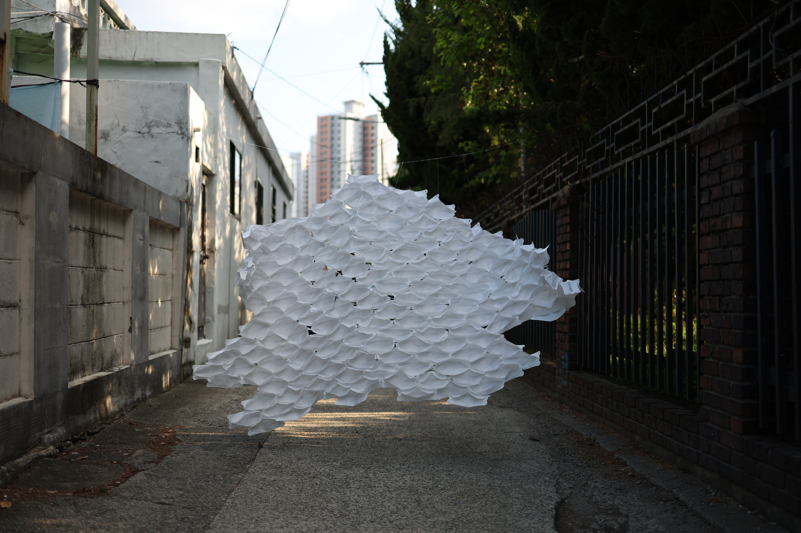

ABOUT
김이정
동시대 미술의 경계에서 물질성과 공간의 관계를 탐구하는 김이정은 국민대학교 회화과에서 작업을 이어가고 있다. 버려진 재료와 인공적 구조물의 이질적 결합을 통해 내면의 정적과 시각적 불협화음을 표현한다.
작가는 기억과 공간이 교차하는 지점을 회화와 입체 조형으로 확장하며, 사물이 가진 고유의 시간성과 변형 가능성에 주목한 자아 탐구의 공간을 구축해 나가고 있다.
DOWNLOAD CV →WORKS
EXHIBITIONS
GROWTH (성장)
2026년 6월 10일 - 8월 30일
구조적 선과 유기적 형태의 결합을 통해 생명체의 확장성과 불안정한 변형 과정을 탐구하는 입체 조형 연작 '성장'을 선보입니다.
READ MORE →
ROAD MOVIE: ART BETWEEN KOREA AND JAPAN
2026년 5월 14일 - 9월 27일
신체 형상을 탐구하는 대표작과 초기 드로잉 연작이 함께 소개되는 그룹 전시로, 가상의 신체 구조와 공간의 이질적 관계를 조명합니다.
READ MORE →
MEDITATION (명상)
2026년 3월 21일 - 4월 30일
명상을 통해 마주한 내면의 존재에 관한 작업으로, 나무의 결을 따라 생성된 구조와 공간을 통해 생명성과 또 다른 자아를 다룹니다.
READ MORE →
NEWS
KIM YI JEONG
NEW SCULPTURE SERIES 'GROWTH' PRESENTED
JUNE 10, 2026
KIM YI JEONG
GROUP EXHIBITION AT KOOKMIN UNIV
MAY 14, 2026
KIM YI JEONG
NEW WORK SERIES RELEASED
APRIL 20, 2026